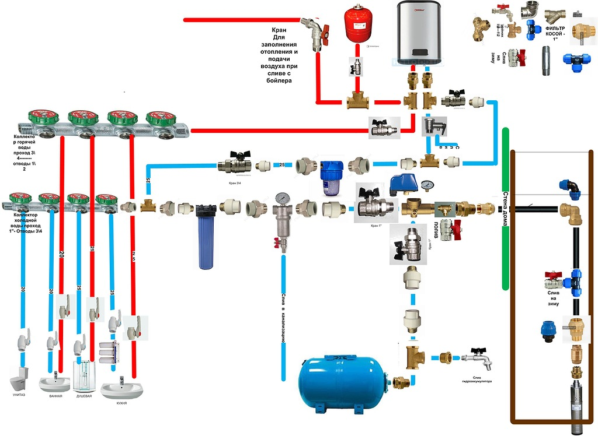

Монтаж водоснабжения

На практике, правильный монтаж и установка водоснабжения зависят от множества факторов:
1 этажность здания;
2 его размеры и предназначение
3 структура почвы, если систему необходимо смонтировать на даче или в загородном доме;
4 материал, из которого изготовлены трубы;
5 время года;
6 протяжённость трубопровода;
7 прочие нюансы.
Поэтому, если вам требуется монтажник водоснабжения, обращайтесь к профессионалам. Позвоните по
нашему телефону, и обговорите все условия недорогого монтажа.
Способы монтажа труб водоснабжения зависят от материала
Для одних труб нужна сварка, для других – спайка или склейка, всё зависит от материала, из которого
они изготовлены. От способа соединения, в какой-то степени, колеблется стоимость монтажа
водоснабжения и скорость работ.
И тот и другой способ довольно трудоёмкий. Нужны специальные инструменты и приспособления – гильзы,
фитинги, прокладки и прочее. У специалистов нашей компании при стыковке металлопластиковых труб
никаких затруднений не возникает – они профессионалы.
Полипропиленовые трубы монтируются с применением пайки – стыковой или муфтовой. Качество пайки очень
важно, так как трубам предстоит работать под высоким давлением. Любые, даже самые маленькие,
погрешности в работе или неопытность монтажника могут спровоцировать протечку стыка через какое-то
время, что совершенно не нужно хозяину. В нашей компании нет неопытных мастеров. У всех за плечами
большой объем выполненных работ. Ваша система водоснабжения гарантированно проработает много лет.
Медные трубы, несмотря на их надёжность и долгий срок службы, довольно сложно монтировать. Медь
плохо соединяется с оцинкованной сталью, а именно это приходится делать очень часто. Для таких
соединений применяется высокотемпературная или низкотемпературная пайка. Соответственно,
используется твёрдый или мягкий припой. Такой монтаж водоснабжения в Москве, как в самом большом
городе страны, проводится довольно часто. В основном – в коттеджах и квартирах.
Для монтажа стальных труб используют сварку – метод надежный, проверенный, но трудоемкий. Наши
мастера легко с ним справятся. Ваш водопровод будет служить десятилетия. Во многих местах система
водоснабжения в Москве состоит из стальных труб, проложенных много лет назад, еще в советское время.
Соединения труб бывают разъёмными или нет. Для разъёмных соединений требуются дополнительные
материалы – уплотнители, втулки, фланцы и прочие. Всё это есть у наших специалистов. Где, как и
какое соединение использовать – решает мастер, естественно, с учётом ваших пожеланий.
Система водоснабжения монтируется на долгие годы, поэтому качество работ при стыковке труб должно
быть безупречным. Именно от этого зависит бесперебойное функционирование трубопровода.
Надёжность системы зависит от опытности и квалификации мастеров. Они должны чётко знать:
— каким образом стыкуется та или иная труба;
— на какой глубине должны пролегать эти трубы;
— какой тип разводки подходит для вашего помещения или дома;
— сколько времени займет та или иная работа;
— какие материалы понадобятся при монтаже;
— какие инструменты и приспособления потребуются;
— сколько и каких стыков будет в системе водоснабжения;
— многие другие вещи.
Профессионалы нашей компании предусмотрят все мелочи, надёжно смонтируют систему водоснабжения и сдадут
её в рабочем виде.
Все необходимые работы при монтаже трубопровода будут выполнены в срок. Дружная и слаженная работа
коллектива компании позволяет монтировать системы водоснабжения за короткое время. Вам не выгодно долго
ждать окончания работ, нам не выгодно их затягивать.
Звоните по телефону компании и заказывайте монтаж системы водоснабжения в любом месте. Мы справимся с
работой, как малых, так и больших объёмов. Нас выбирают за скорость и качество.